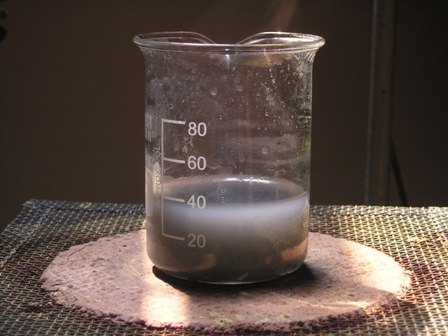
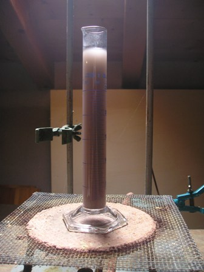
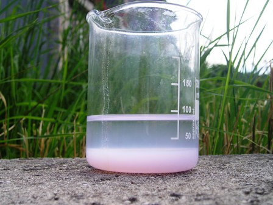
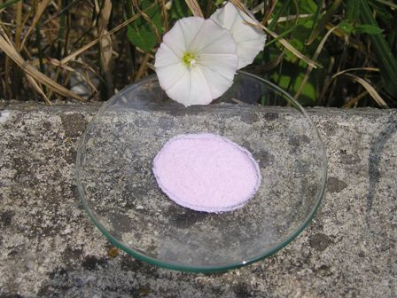

Buttare un vecchio Hard-disk? Non sia mai! Ci sono dentro delle piccole ma potentissime calamite che per essere così potenti sono al ferro-boro-neodimio: non potrebbero essere quindi per un chimico sperimentale una perfetta miniera d'oro... pardon, di neodimio?
Detto fatto: l'hard disk defunto è pregato di passare prima in officina demolizioni... dove, opportunamente operato potrà fornire i due consueti magnetini reniformi, ognuno con suo bel campo magnetico tanto intenso che sembrerà di vederne uscire le linee di flusso!
Il più difficile (per far le cose per bene) sarà spelare meccanicamente la copertura (cromo? nichel?) che lo ricopre, in modo da aver poi meno porcherie possibili nel bagno di attacco chimico.
Con MOLTA pazienza e con un minitronchesino affilato ci si riesce.
Quandi si ha finalmente in mano il paziente... nudo, lo si trasferisce immediatamente dal reparto "meccanica" al reparto "chimica", dove la sua anima magnetica sarà destinata inesorabilmente a svanire, lasciandoci però in gratuita eredità un bel sale esotico.

Ora entro nel merito in maniera concreta: la lega al ferro-boro-neodimio di composizione indefinita di cui sono fatti questi magneti si scioglie velocemente e perfettamente in HCl a media concentrazione e non in forte eccesso, con vigoroso sviluppo di idrogeno. Diluendo un po' la soluzione e portando all'ebollizione si separa un abbondante precipitato grigiastro, che va eliminato per filtrazione; non ne ho verificato la composizione, essendo il cloruro di neodimio NdCl3 formatosi sicuramente solubile.
Ho ripetuto un paio di volte l'operazione fino ad ottenere una soluzione perefttamente limpida (di colore vagamente violetto pallido) e solo leggermente acida.
Sulla soluzione ho provato la precipitazione a caldo con H2SO4 (il solfato di neodimio è più solubile a freddo che a caldo) ma l'operazione non mi ha convinto: riscaldando si ottiene comunque un precipitato (bianco/grigiastro) che però per diluizioni opportune non rispecchia la solubilità del solfato di neodimio alle varie temperature: morale, non ero sicuro che si trattasse di Nd solfato puro, ed ho tenuto quindi la soluzione per la successiva sicura precipitazione con acido fluoridrico.

Essendo il fluoruro di neodimio l'unico fluoruro sicuramente insolubile dei metalli della lega di partenza, si è certi della separazione di questo metallo dagli altri.Ho trattato la soluzione con un lieve eccesso di H2F2 al 15%, ottenendo un bel precipitato bianco rosato di NdF3, che pur essendo gelatinoso è molto pesante e si separa velocemente sul fondo del becker ed è molto facile da filtrare. Una volta lavato bene e seccato a 90°, si presenta come una polvere sottile di colore leggermente rosa (di tonalità simile ai sali manganosi, ma più intensa) come del resto conferma la letteratura.

Partendo da un magnete di 6 g, dopo tutti i passaggi, i lavaggi e le inevitabili perdite, ho ottenuto alla fine 1,7 g di NdF3, che ritengo adeguatamente puro per lo scopo di questo lavoro di ludica curiosità sperimentale.
E il fiorellino si era messo proprio lì dove di solito faccio le fotografie, forse per smentire con poesia coloro che tentano (purtroppo con successo) perfino di rendere arida questa scienza meravigliosa.
2 commenti